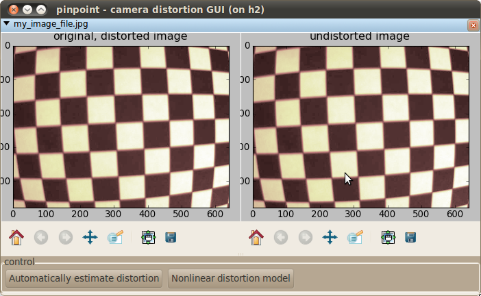
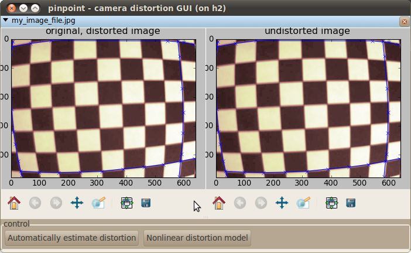
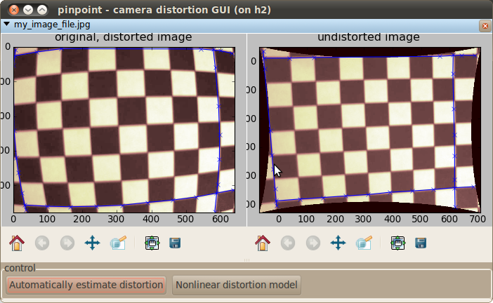
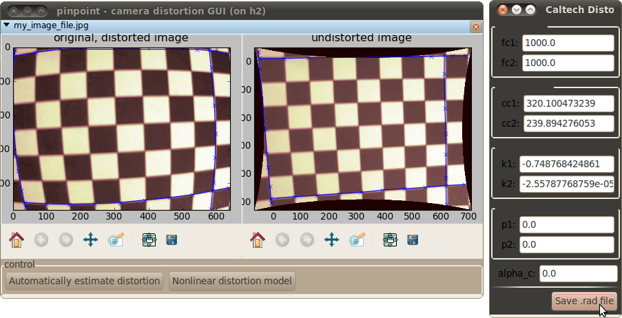

This program allows one to estimate the depth-independent non-linear distortion created by many camera lenses. Fundamentally, this is a GUI program for an implementation of the Line-Based Correction of Radial Lens Distortion (GMIP 1997) algorithm by Prescott and McLean.
From the command line, start the program with an image file from your camera:
pinpoint_distortion_gui my_image_file.jpg
This should open a window that looks something like this:
(If you don’t see the images, click the little triangle next to the file name to show them.)
There use the following keys to tell the program about lines in your images: (You may have to click once on the image before it will register your keystrokes.)
- “p” will add a point to the current line
- “n” will create a new line
- “c” will clear all your lines.
As you add points and lines, these will be drawn on the image. They will also be printed to the console.
Because the edges of your image contain the most distortion, it is most robust to create lines near the edges. A set of lines ready for distortion estimation looks like this:
Note that you do not need to take images of checkerboards for this to work, nor do you need to click on the checkerboard corners. These are simply convenient objects to photograph, because all the contrast in them should be straight lines.
When you have a few lines marked in your image, and you are ready to estimate the distortion, click the “Automatically estimate distortion” button. Your computer should be busy calculating for several seconds (or longer), and then will hopefully have created a very accurate model of the distortions of your lens. This should be immediately apparent because the “undistorted image” window should contain an image without distortion, like this:
Finally, save the distortion parameters to a .rad file. Click the “Nonlinear distortion model” button to view the model parameters window, and then click “Save .rad file” to open a file save dialog.
The saved .rad files are compatible with Bouget’s camera toolbox and Svoboda’s Multi-Camera Self Calibration Toolbox.